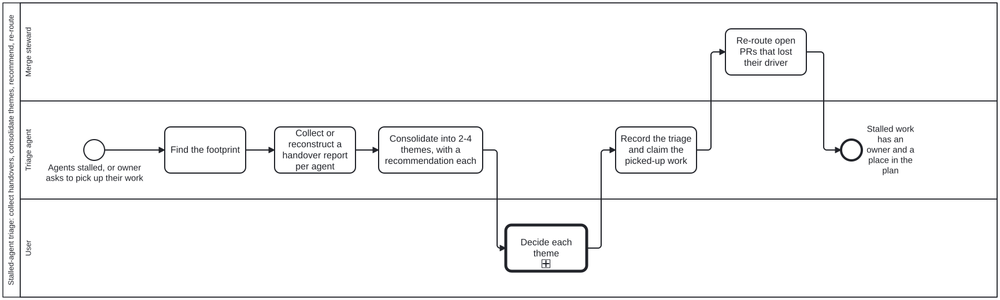

Generated from
cat-harness/processes/sdlc/stalled-agent-triage.bpmnbygen-processes-viz.ts— do not edit here. All processes
Process_StalledAgentTriage · strict · 6 step(s)
When agents stall (context exhausted, container lost, session timed out) their work is spread over PRs, branches, beans and process runs. Collect each agent’s handover report, or reconstruct one, group the work into 2-4 themes, recommend how to pick each up, let the user decide, then record it and re-route open PRs through the merge steward. Owner, 2026-10-02: ‘an incoming stalled agent triage process which needs to look at stalled agents (named or over a given time window from active PRs, branches, discussions, beans etc), try to get as many handover reports as possible, if many then consolidate the various workstreams into 2-4 themes, give recommendation on how to pick up the work as part of current/new workplan; if open PRs etc, coordinate with relevant agents (e.g. the Merge Manager)’. Operating skills: stalled-agent-triage, handover-report.

| lane | role | what it does here |
|---|---|---|
| Triage agent | authoring-agent |
Reads the footprint the stalled agents left, collects or reconstructs a handover report per agent, groups the work into 2-4 themes, and recommends. It never finishes, closes or deletes another agent’s work. |
| Merge steward | session-coordinator |
Receives the open PRs that lost their driver: which are green and ready, which are mid-merge, which must be re-driven from their PR head. |
| User | user |
Decides one theme at a time: continue, fold into the plan, new epic, park, or scrap. |
1 of 6 step(s) carry no documentation — activity-documented lists them.
| step | lane | skill / sub-process | what it does |
|---|---|---|---|
Find the footprintA_Footprint |
Triage agent | stalled-agent-triage |
handover notes (beans/notes, title ‘handover:’), open PRs and branches by session or time window, in-progress beans, workflow instances, last PR and issue comments. REST, one batched pass. |
Collect or reconstruct a handover report per agentA_Collect |
Triage agent | handover-report |
Use the agent’s own report and check it against live state; if none, ask the agent if it is still reachable, else reconstruct with the handover-report template and mark it reconstructed. Unpushed state is unknown, never empty. |
Consolidate into 2-4 themes, with a recommendation eachA_Consolidate |
Triage agent | stalled-agent-triage |
Group by what the work delivers, not by agent. Each theme gets its epic, members, dependencies, risk, and one of: continue, fold in, new epic, park, scrap (owner only). |
Decide each themeU_Decide |
User | — | — |
Record the triage and claim the picked-up workA_Record |
Triage agent | bean-coordination |
A ‘triage: |
Re-route open PRs that lost their driverS_Reroute |
Merge steward | coordinate |
Green, up-to-date PRs join the queue; mid-merge branches are re-driven from the PR head, never guessed at; red PRs go back to the new driver. |